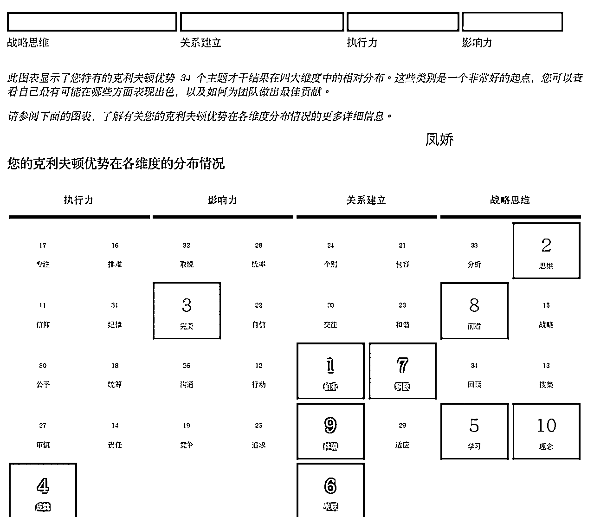

来源：https://m76za4xx2c.feishu.cn/docx/UsFmd6vkcoW67UxOr1QcGLv8nBU
大家好，我是凤娇。非常高兴能有机会在今天跟大家分享自己这21天的收获-
有幸参加过了3月份的一场航海，填补了我在4月选择裸辞跨界探索自媒体期间，渡过了充实而有意义的第一个gap月的学习，当我全身心的聚焦在个人优势挖掘与享受旅途带给我的所见所闻时，因对才干的认识，也更好的让我了解到为何内心会有那种喜悦与觉察契机，收获非常的多。所以这次6月份优势挖掘航海，我也选择了果断的报名，作为日常对自我内在认识和探索的契机。
首先要感谢醒醒教练提供的每天打卡模版和点评，这种打卡方式远比以往那种漫无目标的打卡更加有效。它有清晰的学习计划，21天，根据你自身情况，去学习。Coach教练的方式，也深受我的喜爱，良好的提问不仅促进了我的自我反思，还引导我深入思考自己的行为模式、动机和目标，极大地增强了我的自我认识。
通过一系列的打卡，我深刻理解到，优势=天赋*投入。也让我对自己的前5才干进行更深入的挖掘和理解。学会了如何正确地做出改变，如何扬长避短，而不是盲目地遵循木桶理论去补短板。
【姓名、微信名】李凤娇
【坐标】上海
【三个标签】ANYTIFF 品牌公司创始人、天赋优势教练、包装设计专家
【过往经验】
1、设计总监：深耕设计12年，跨界4大行业「印刷>广告>互联网>食品」
2、专业加持：出版印刷+工商管理
【高光时刻】
1、综合能力，设计+品牌+营销，三大壁垒融汇贯通，助力销售同比实现4倍业绩增长；
2、跨界学习，知识付费6位数，开启自我探索之旅（冥想+疗愈+优势+财富），开启文学与哲学的阅读；
3、喜欢挑战，24年裸辞，创办品牌公司，新媒体领域探索，在实践中持续自我优势挖掘；
24年裸辞，正式告别职场打工模式，全职专注个人IP商业赛道以及运营ANYTIFF品牌设计公司，
期待借助新媒体平台，成就不可取代的自己。
让我下定决心裸辞，放弃职场年薪30+万的稳定的收入，
充满勇气和果断的选择去玩自己的无限游戏
除了自己家人的支持与自我前期职场工作收入的积累
最大一部分原因，我想就是我在持续的探索自己，认识自己
。。。
本次我也主要分享
我是如何借助盖洛普测评来更好的认识自己
从而确定小红书的账号定位
我的四个维度关系分别是战略思维>关系建立>执行力>影响力
战略思维【思维2、学习5、前瞻8、理念10、搜集13、战略15】
关系建立【伯乐1、关联6、积极7、体谅9】
执行力【成就4、信仰11、责任14】
影响力【完美3、行动12】
可以清晰的看到，我更喜欢先想清楚自己到底想要在哪个领域，去做什么事情，主要实现什么样的意义与价值？为了达到这个目标，我还需要让自己具备什么能力？我是否可以独自跑完这一圈？如果我无法跑完，需要找到谁来借力我的后半程？最后我才会再找对的人，再迭代，开始干，
对我来说，只有先自己想清楚到底要做什么事，才能更加的清晰知道到底要找什么样的人去构建我的团队。否则只会浪费时间周旋在找项目上，做着不喜欢的事情，既浪费了时间，又折磨了自己。
通过这段时间的学习，对于我排名top10甚至top 15的才干，在四个维度中都有较为突出的，这又让我更加进一步的看到了我个人的潜在优势。

前面有提到，我果断的选择了裸辞，是因为在【盖洛普航海的个人优势探索】。
它让我清晰的知道，因为我的「思维+成就」无法忍受重复的事情，如果让我每天按部就班做相同的事，去做些很紧急且不给我时间思考、自己做决策的事情，我就会很痛苦，因为战略思维几乎用不到实处上。也就促进了我在整个职业选择的方向上，相对电商设计师的快节奏，套模版出画面，我更喜欢可以有时间让我创意思考，且可以与产品经理协商的快乐，我不能理解，为何要死遵守那些限制我的想象力和创造力的规则，同时命令别人做事也会让我觉得在伤害关系，让我本能的讨厌“狼性、权威式”的领导模式和工作环境。
在我过去的职业生涯中，作为一位平面设计师，不管是在广告行业互、联网行业、以及快消品行业，发挥创作这件事情都获得了不错的结果，这些工作，都让我很好的发挥了我的创造能力，也都与人打交道，都需要支持他人的发展，不断输出新想法的作品，给他人带来启发，进而获得价值感和意义感，也帮我结交了不少贵人。
但凡是需要定时打卡，处理数据，必须按照规定步骤做事的业务场景，我时常会觉得备受束缚，不断怀疑：“规矩是死的，人是活的，明明不坐班可以更好的发挥我的创造力，为什么还要浪费通勤的2h去按时打卡呢？”，当我看到目前的职场生活，无法满足我的成长之后，我就做出了当下我认为最正确的选择；
我也深刻的意识到，越是在找到自己优势能发挥的地方，越容易出结果。回顾在过去的职场中，凭借内心的感觉，让我作为一名设计师，不断在自己喜欢的赛道领域里积累，虽然行业在切换，但是设计师所带给我的创造力是我喜欢且擅长的，它让我感受到了意义与价值。不过，这四个维度的优势在使用时，也出现了盲区：
在了解并应用自己的优势维度时，多关注在什么领域更能展现出自己的优势。对盲点也需要有意识的觉察和调整。
它让我更加清晰的看清了自己的人生梦想，并极大的相信自己，破圈成长，提升思维和眼界认知；
它让我知道，我的随心而为，是最好的直觉方向；
它让我知道，我要将自己作为企业来运营，就必须要产生交易价值，考虑购买者的心理特征，不能自嗨模式下只考虑自身，制定了一个完全不可行的规划；
它让我知道，知识和技能目前已是我强有力的后盾，现在需要考虑的是如何借助自媒体商业化自己；
。。。
内心无比坚定，从而开启自我从打工思维到老板思维的转变
也很庆幸在gap的这2个月，我在追随内心，静静地享受学习与航海，
也通过学习优势，我意识到了虽然自己存在很多弱点，但我可以用自己擅长的方式去弥补这些弱点。
甚至我可以无限的放大自己的优势，从而解决过去因只关注劣势所导致的自我不自信与自我价值的不配得感的问题。
熟练的意识到自己的才干特色，也帮助我筛选掉了很多不适合我的事情，让我少走了很多的弯路，我不会看到市面上哪个赚钱快就冲进去，我也不会轻易的更改自己的航线，不会看到主播、卖货很赚钱，然后我就搞个直播间进场...因为我内心难受、不喜欢，也就不会轻易去尝试，因为知道自己不喜欢，就算尝试了，也会发现自己根本坚持不下来
那么对于我来说，我就好好的发挥自己爹优势，好好的掌舵好自己的船只，
充分发挥战略才干，让行驶在浩航的大海中的我可以知道内心的方向；
相比于漫无目的的走错航线，我更想让我清晰的知道大方向目标再行动
若没有，我宁可去旅行，与享受当下的生活，也不会做些看起来很努力的执行
结果最后发现，方向全部偏掉了，然后再重新开始
例如：
我很擅长独处、策略和思考，那么设计这种创意类的工作我就很喜欢，以往在职场多表现确实也如此，因为喜欢，让我可以持续的在设计领域持续的深耕13年（思维+前瞻+理念+搜集+战略），又由于我的「沟通26」和「取悦32」很靠后，那么当我现在选择裸辞，跨界全职研究自媒体时，那么我就不会考虑直播这种需要大量的和陌生人沟通、面对屏幕去卖货的事情，通过这种排除法，从而也让自己减少了试错成本；
我更擅长通过支持他人发展，在自由、被尊重、充分发挥自己创造力价值的环境里，与伙伴相互协作来建立深度关系（伯乐+体谅），那么意识到自我在墨守成规的环境里，做着日复一日，年复一年的重复且毫无创造力的工作时，我就会很难受（纪律31），那么我就会遵从内心的引导，勇敢的选择逃离，去追寻自我想要的使命与价值；
我够保持积极的心态去解决问题，将任务流程化（积极+成就），在加上「思维+完美+体谅」才干，脑海里总有很多的天马行空与奇思妙想，也因为我更好的意识到我这些才干的优势，让我更加清晰的知道，什么样的方案更适合目前这位客户，我可以更好的站在客户的立场，给到对方我最专业且最满意的作品及解决方案。
我喜欢心理，尝试学习了1年，做了50+个案例后，发现自己很容易被对方的负面情绪所影响，了解过盖洛普图之后，才发现自己为何会感到如此的累，因为我的「体谅」很高，同时「完美」才干的配合，就让我更加讨厌这种恶补窟窿，同时「信仰」高，对产品的真实性、意义感都很挑剔；同时战略思维突出，去频繁1:1维护用户本身就很耗能，相反，我的战略思维>关系建立，本身就很擅长独处、聚焦做复杂的课程与战略规划；
最后，想要感谢本次优势探索的航海，通过深入学习优势
我也开始更加客观地看待自己，认识到自己的优点真的还是非常多的。
我需要做的就是将我的才干通过刻意练习逐渐转换成我的优势。
同时管理好我的阴影面，减少才干自动化驾驶给我带来的负面影响。
慢，就是快
这是我最深层次的价值观念，
也清晰的知道，我只有想清楚自己到底要实现的是什么？
我才能知道要如何去规划，我要如何达到未来那个目标？
实现路径是怎样的？以及我需要规划什么和考虑什么？
通过自我探索，在认识自己充分发挥战略才干
更加细化了下具体的内容
并明确后面2个月的执行步骤，开启真正的自媒体实操之路
然后在执行中不断的复盘与调整和优化。
坚持、持续去做，享受当下的过程，结果交给时间。
以我擅长的包装设计领域为例，在接下来的2个月
我就会围绕账号领域的定位，去分享自己的专业
同时去不断拓展自我其他领域的视野。
⛽️目标：聚焦小红书，2个账号同时测试，共涨粉2000；
🧠学习：了解小红书平台规则、引流方式、商业战略布局、内容创作、专业阅读；
1、凤娇的秘密花园（心理学）
视觉表现：手写字体+共鸣文案内容+设计排版
内容创作：优势挖掘+内在探索+自我觉察/生活去感受
2、ANYTIFF 包装设计
视觉模版：专业设计
内容话题：包装设计+食品快消费+toB外资客户+山姆会员店
关于如何去执行？
我依旧通过分析自我的优势擅长，通过学习快速拿到结果。
初步还是先选择我擅长的设计领域为切入口，
去深耕业务主线。拓展认知边界
对于我自身来说，在自媒体平台（先聚焦小红书）
先精准定位在设计领域的垂直细分包装设计
为那些拥有品牌历史（满足我对小而美的团队需求）
想要将产品入驻中国山姆、Costco等大会员店的这类外资企业客户
提供符合会员店的包装设计以及PDQ陈列的解决方案
因为对企业来说，包装不仅是包装，包装是产品、品牌、
更是企业优势的外化表现，也是品牌的流通程度（品牌的根本）
产品的热度、设计的温度、传播的力度
我的目标：2个月内完成小红书2000人涨粉计划
我的优势：
在TOP15的才干中，我的【战略思维+关系建立】维度有10个才干突出
擅长策略，喜欢通过研究各方方面的信息和工具，搭建系统，
再把合适的人放在合适的位置、将策略落地。
我影响力靠后，不太擅长招募新人、快速成交。
我的策略 :
我能快速通过学习、搜集了解小红书平台运营规，
创作者+用户+平台的需求，找到三方利益的平衡点
再根据目标用户，创作相应的内容，
制定销售漏斗策略，写 SOP，最后带领大家执行 SOP
不擅长快速引流，快速成交，也不擅长处理掌控主动权
我的路径：
我选择用内容来找同频客户，自己独立跑通完小的MVP闭环，产生自动化成交。
再利用关系建立的优势，找到擅长引流+快速转化的朋友
最后同有影响力的朋友一起互补合作
我来负责构思：账号定位+战略布局+运营策略+内容创造
注意：
这里我再额外补充下，根据我的付费经验以及我所踩过的坑，真心告诉大家：自我的个人IP，无论你借助何种方式和工具来寻找，就算付费也好，最终给出答案的，必须是你自己，也只有你自己能够清晰自己到底想要的是什么，你想要的定位，也只有你自己可以找到。
在我所学的Coach教练模式中，是不会给成员任何现成答案的，而是用自己的专业知识和引导技巧，来激发咨询对方独立思考。
这个也就需要大家对自我有很强的认知，看大家到底的需求是怎样的？如果你想要明确的答案，那么我告诉你，没人可以告诉你。如果你需要有人带领你思考，去明确自己的定位，那么可以去找到与自己同频的老师（在生财就有很多，也欢迎大家参加优势挖掘的航海感受下）。
以上是关于我通过本次盖洛普航海，对自我账号的定位，以及内容创作的一些初步方向。
2024年，我也对打造自己的商业闭环充满了信心。
我也会集中兵力，用自己的优势，着力击穿一点，创造出成就事件。
期待你们见证我从0-1拿到结果的全过程。
后续我会按照这个定位，具体的落地到实操，与大家分享我的结果和感受。
1、持续做价值规划
现在我已经离开职场，在创业阶段，我每天都会思考，我还需要什么知识、技能和能力，
哪些工作可以让自己提升这些要素。在所有内在的价值中，我知道我能努力的点更多是在知识、技能和能力。
相比于之前的不断学习设计技能的方式不同，现在的我，拥有了更多的商业全局的考量，不再为了学习而学习，
思维认知的迭代，也让我有了更多的勇气，去将读了那么多的书所学到的知识和技能，去输出出去，去用出去。
2、无用之用是为大用
现在，我没事的时候就会读哲学、文学类的书籍。去重新构建自己的思考方式。这是我最近最深的一个感触
在30年前的我也觉得，哲学、社会学、心理学等各大学科很高大上，很空洞，感觉学了也不能找到工作。
此刻，我深刻的感知到，这些东西才是真正承载人类顶级智慧和知识的学科，
在商业的世界中，所见到的一切都是在这些底层学科之上构建而成的。
也是此刻才意识到，以前的自己，竟然花费最多时间去学习的是迁移能力最弱的知识（依旧很感谢过去踩过的坑，才让此刻的我能够有这么深刻的感悟），导致对这个世界的理解过于的片面，总是以黑白、对错的二次元来看待事物，从而让自己不断的内耗与质疑
也正因之前的无用认知，导致自我的世界中的房子，地基都没有打牢，让自我的“房子”随着外界的一阵狂风暴雨就摇摇摆摆，不稳定，甚至下场暴风雪，可能就犹如地震一般，被摧毁，崩塌。然后自己内心的世界也就不断的内耗，这就好比盖房子，在你的地基没有搭建好的基础上，你能力再怎样强，钢筋品质再怎么好，都无法让守护好自己的“房子“的。（专业知识和技能，就相比于钢筋水泥）
3、商业知识
如果我要将自己作为一家公司来运营，那么除了目前手上可以执行的部分，我还需要有更多的商业学习。
我需要赚钱，我需要更好的将自己的专业知识和技能去实现商业化
需要跟其他人才竞争，需要根据自己的优劣势进行细分定位
需要思考我可以为什么样的企业提供什么样的服务
什么样的企业会买我的服务？
目前我也在借助一个商业模式画布，结合这个工具来思考，让我可以看到更全的全局，
不至于让自己长久的陷在执行层，偶尔可以从这些细节的执行中抽离出来，让自己可以看得更高更远一些。
（这个工具，我还在践行中，等我实践觉得好了再与大家一起分享）
非常感谢21天航海中的各位教练、志愿者以及群里小伙伴们的陪伴。
也欢迎小伙伴们来跟我一起交流
探讨一下对优势的理解和小红书运营、创业心得
构建自我的影响力的方式有很多，做的好的且舒适的方式
一定是自己擅长且喜欢的。
祝大家早日将才干统统发挥成优势，一起生财有术!